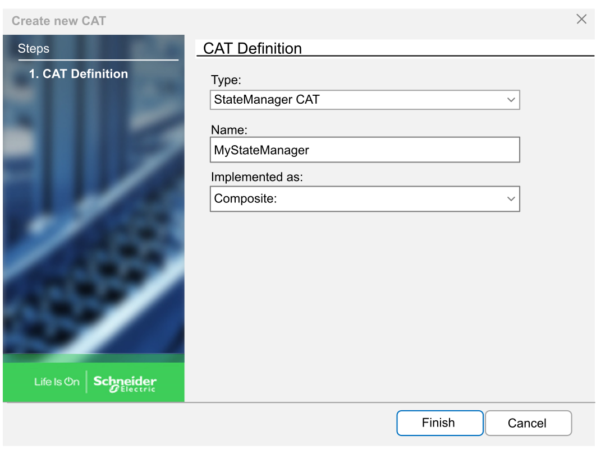
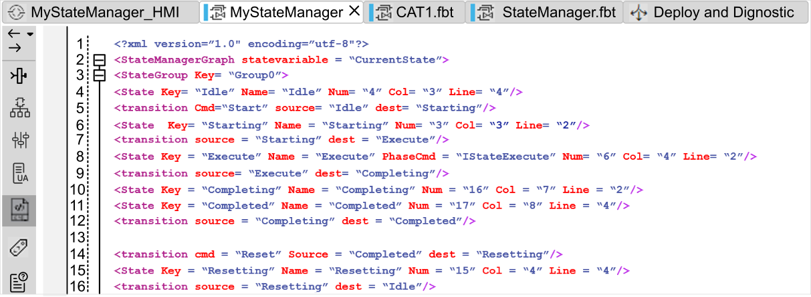

The State Manager is a special CAT that manages states and transitions between states. A State Manager is often associated with standards like ANSI/ISA-88 or PackML.
In EcoStruxure Automation Expert, a State Manager (SE.AppStateManagement.StateManager) is provided in the SE.AppStateManagement library, which must be referenced in your Solution to be used.
You can also create your own State Manager for your Solution by carrying out two actions:
Create the logic and the interface to implement your states as per IEC 61499 standard.
Describe the relations between them graphic in the State Management pane to obtain a graphical representation.
These actions are detailed hereafter.
To create a State Manager in your Solution:
|
Step |
Action |
|---|---|
|
1 |
In the Solution Explorer, select the folder of interest under CAT > Application. |
|
2 |
Right-click and select New Item…. The Create new CAT window opens. |
|
3 |
 |
|
4 |
In the Interface pane of the CAT tab, define the function block interface. Refer to the Interface Editor topic for more information.
NOTE: Each state with which a sequence can be associated must expose an IPhaseCmd adapter (see the SE.AppStateManagement library).
NOTE: To allow online watch, the State Manager CAT must expose the actual state as an output.
|
|
5 |
In the Function Blocks Network pane of the CAT tab, create and connect all function blocks of the CAT. Refer to the Function Blocks Network Editor topic for more information. |
|
6 |
In the State Management pane of the CAT tab, describe the State Management diagram in XML language. Refer to the State Manager Editor topic for more information.  |
|
7 |
Optionally, use the other panes of the CAT tab to configure more parameters. |